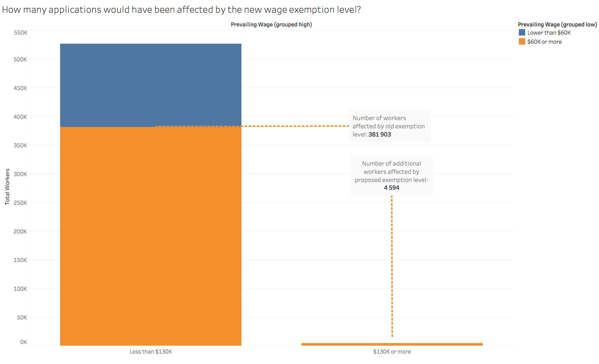
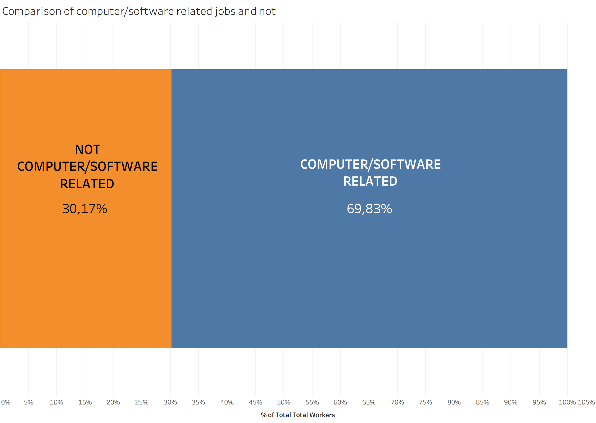

DISTRIBUTION OF CERTIFICATIONS, WITHDRAWALS ETC.
Assignment 2: Exploratory Data Analysis
Marius Maaland — maaland@cs.washington.edu
Dataset
The dataset contains details of just under 700 000 H-1B temporary worker visas, where the date of the determination
was issued on or after October 1, 2015, and on or before September 30, 2016.
The dataset was compiled by the Department of Labor's Office of Foreign Labor Certification division.
As an exchange student from Norway, this topic is of great interest to me. If I at some point after my exchange want to return to the U.S. to work, the H-1B probably the route I will have to take.
The H-1B visa and the application process has been under scrutiny for a while now. Every year the Department of Labor receives more applications than allotted visas, and a lottery system is utilized to determine which applications are processed.
In addition, many claim the visa to be broken, and exploited by consulting companies to bring in tech workers for lower pay, displacing American workers.
The visa was a topic of conversation during the most recent presidential election, and a bill was recently proposed by congresswoman Zoe Lofgren, suggesting a number of changes to the visa.
I will be exploring some of the proposed changes, and look at how they would have affected 2016 applicants.
The bill is available here
The data is available online at: DATASET-URL-HERE
Initial Analysis Questions
- QUESTION_1
- QUESTION_2
- QUESTION_3
- ...
Discoveries & Insights
An employer is considered H-1B dependent if 15% or more of its employees are on H-1B visas (assuming the company has more than 50 full-time employees.)
H-1B dependent employers need to include additional attestations in the application if the worker is being offered an annual compensation of less than $60 000 and withouth a Master's degree.
The bill described above proposes to raise this cap to $130 000 (and remove the Master's requirement). This is explored further below.
The dataset contains prevailing wages in different units. However, the unit of yearly salary is by far the one present in the most records. I will therefore, for simplicity's sake, ignore the other units. That way I don't have to deal with the assumptions involved in convertion hourly, weekly etc. pay into yearly pay.

The bill proposes to raise the prevailing wage exception level at 35 percentile points above the median
for the most recent national annual wage for Computer and Mathematical Occupations as
published in the Department of Labor Occupational Employment Statistics, which, long story short, is at $130 000.
It is apparent in the above graph that this will not affect many more applications, which indicates that employers are mostly paying their H-1B workers fairly, and on par with the prevailing wages in their respective fields. They are not displacing American workers, at least not because they are taking lower salaries.
Sadly, the dataset does not contain information about the applicants degree(s), so I was not able to assess the effect of removing the requirement of a Master's degree.
Since the visa receives so many applications each period that a lottery system has to be utilized to decide which applications to process, critique has been raised towards companies that seemingly hog visas, making it more difficult for other companies to get their application processed. Infosys and TCS(Tata Consultancy Services) are names of companies who are often mentioned in discussions about this topic.
The graph above shows the top 10 employers, based on number of H-1B worker applications in this dataset. Infosys and TCS are not surprisingly in the top 10, but not in the top 5. Cognizant Technology Solutions seems to be the biggest H-1B hog, as it is H-1B dependent, and is responsible for almost a quarter of all H-1B filings with determinations in the inspected time period.

I thought it would be interesting to look at where these H-1B workers would be working. Unsurprisingly, California is the most popular state, with over twice the number of worker than runner-up Texas.
The H-1B temporary worker visa is supposed to help the U.S. attract skilled people to fill empty jobs in specialty occupations.
The graph above shows the top 10 occupations of the workers in the examined dataset. The larges slices of the pie chart belong to software and computer related occupations, such as software developers and computer programmers. In fact, 5 of the top 10 occupations are related to software and/or computers.
However, many of these categories are very similar.
TOP OCCUPATION NARROWER

TOP OCCUPATION BINARY
ENTER IMAGE CAPTION HERE.
Summary
WRITE FINAL SUMMARY HERE.